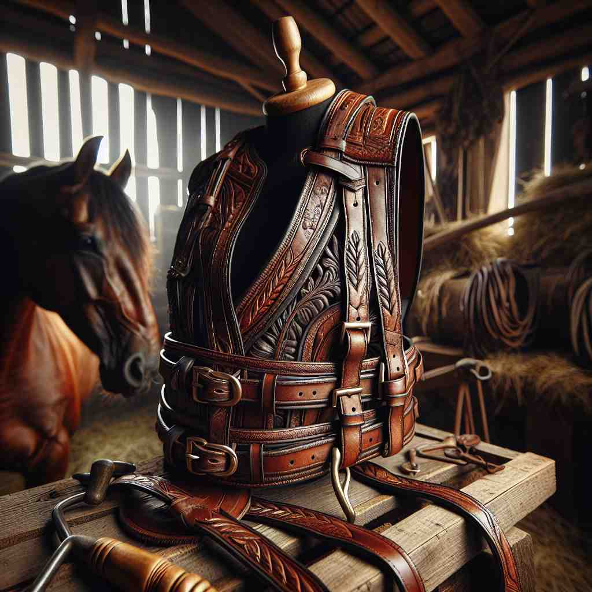

💬 The horse is wearing a horse harness to pull the plow. 马正佩戴马具以拉犁。
💬 You should wear a harness when climbing the mountain. 爬山时你应该系好安全带。

💬 The farmer uses the horse harness to prepare the horse for work. 农民使用马具准备马匹工作。
💬 The horse is wearing a horse harness to pull the plow. 马正佩戴马具以拉犁。
💬 You should wear a harness when climbing the mountain. 爬山时你应该系好安全带。
💬 The farmer uses the horse harness to prepare the horse for work. 农民使用马具准备马匹工作。
🧠 想象一匹马被套上'harness'（马具）。这个核心图像体现了控制、利用和系统化的概念。无论是字面意义上的给动物套上挽具，还是比喻意义上的利用自然力量或人力资源，都可以联想到给马套上挽具的画面。这个核心意象贯穿了'harness'的各种用法，帮助你更容易理解和记忆它的多重含义。
🔈 ['hɑːnɪs]
🗝️ n. a set of straps and fittings by which a horse or other draft animal is fastened to a cart, plow, etc. 一套将马或其他拉动物固定在车、犁等上的带子和配件。
🎭 在一个乡村农场的宁静早晨，农夫给他的马系上马具。马具由一系列皮带和金属连接件组成，将马固定在犁后面，准备开始一天的耕作。这展示了'harness'作为束缚动物的用具的含义。
💬 The farmer put the harness on the horse before attaching it to the wagon. 农民在把马套上马具后，将其连接到马车上。
🌳 词根 'harn-' 源自古法语 'harneis'，意为装备或盔甲；后缀 '-ess' 在此单词中没有特定意义，整个单词意思为'利用，治理或给（马等）上挽具'。
💡 记忆 'harness' 时，可以联想为给马穿戴的装备，用于驾驭和控制的意思，从装备转化为利用的概念。
🗝️ v. to put a harness on (a horse or other animal) 给（马或其他动物）套上马具
🎭 在马厩旁边，一位经验丰富的马夫正小心翼翼地给一匹年轻的马套上马具。他讲解每一条皮带的用途，以及如何确保它们的安全和舒适。这个场景展示了'harness'作为给动物套上马具的动作的含义。
💬 They harnessed the horses to pull the carriage. 他们把马套上以拉车。
🤔 使用核心含义中的装置
🗝️ v. to control and make use of (natural forces) 控制和利用（自然力量）
🎭 在一个现代科技展会上，科学家正在展示如何通过太阳能板'make use of'太阳的能量。阳光被小心翼翼地收集并转化为电能，展示了'harness'作为控制和利用自然力的含义。
💬 Scientists are trying to harness the power of the sun. 科学家们正在努力利用太阳的能量。
🤔 比喻将自然力量"套上挽具"加以利用
🗝️ v. to utilize or mobilize (resources, potential, etc.) for a particular purpose 为特定目的利用或调动（资源、潜力等）
🎭 在一个年轻创业者的会议室，他向投资者讲述计划如何通过团队的协作来'harness'团队的潜力，来推动创新。他强调了合理利用资源的重要性。这个场景展示了'harness'作为动员和利用资源的含义。
💬 The company seeks to harness the creativity of its employees. 公司旨在利用员工的创造力。
🤔 将资源或潜力比作马匹，加以控制和利用
🗝️ n. equipment or a system of parts working together 设备或一个协同工作的部件系统
🎭 在一个复杂的建筑工地上，各种机械和工人协同工作，每个部件紧密配合，所有部分组成一个大规模的建筑工程体系。这展示了'harness'作为一套协同工作的设备或系统的含义。
💬 The workers wore safety harnesses while working on the high-rise building. 工人在高层建筑上工作时穿戴了安全 Harness。
🤔 从马具延伸到其他类型的设备系统